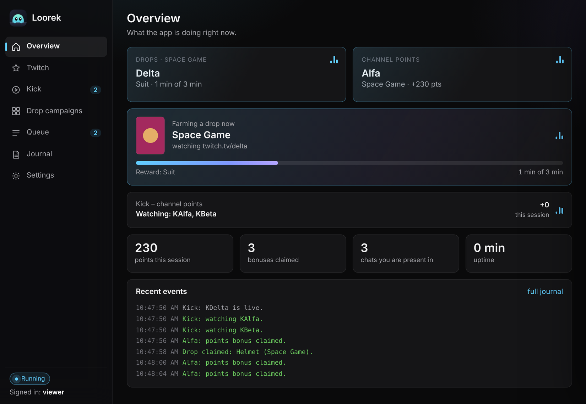

Channel points and drops, collected while you play.
Loorek is a small Windows app that lives in the tray. It keeps you present on Twitch and Kick streams, claims bonuses and farms Twitch Drops – without a browser tab and without playing video.

Twitch channel points
Watches up to two channels at once – all that Twitch counts – and claims every bonus for you.
Kick channel points
Collects points on the Kick channels you pick, on as many at once as you set.
Twitch Drops
Queue games, see every campaign and reward, and let Loorek watch, switch streams and claim.
No browser, no video
It only reports to the service that you are watching. A fraction of what one browser tab needs.
Stays out of your games
An ordinary desktop program that never touches other processes, so anti-cheat has nothing to react to.
Updates itself
New versions come from GitHub releases, are checked against their SHA-256 and swapped in automatically.
How it works
Run Loorek.exe
One file, no installer. It lands in the tray next to the clock.
Sign in once
A separate sign-in window opens for Twitch and Kick. Your everyday browser profile is never touched.
Pick channels and games
Order is priority. Close the panel – everything keeps running in the background.
Questions
Is it allowed?
No. Automated watching is against the terms of service of Twitch and Kick. You use Loorek at your own risk.
Where does my session go?
Nowhere. It is stored in the data folder next to the program and is sent only to Twitch and Kick themselves.
Why only two Twitch channels?
Twitch credits watch time on at most two streams at once. More would earn nothing.
Windows warns about an unknown publisher.
The file is not code-signed. The source is public and every release is built from it by GitHub Actions.